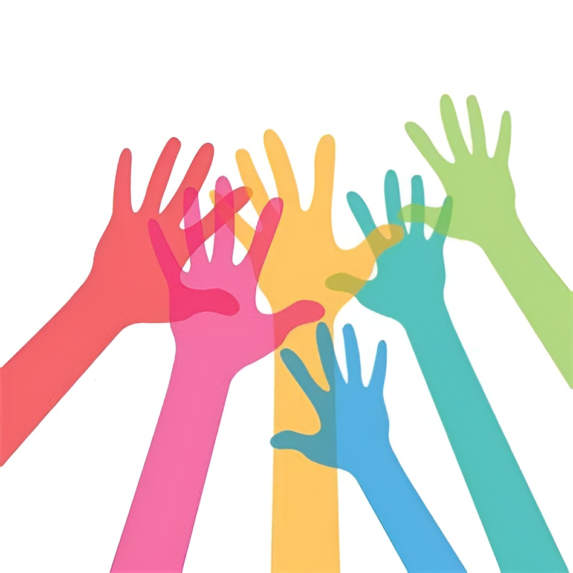
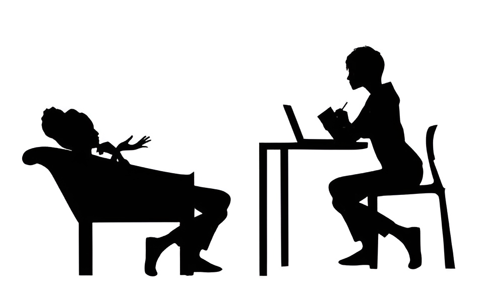

Saúde Mental: Informações e Apoio
Publicado em 26 de outubro de 2023
A saúde mental é um componente essencial do bem-estar humano, sendo crucial para a qualidade de vida de cada indivíduo. Ela abrange o equilíbrio emocional, psicológico e social, e, muitas vezes, enfrentamos desafios que podem afetá-la adversamente. Neste texto, exploraremos o tema da saúde mental, oferecendo informações detalhadas e destacando a importância do apoio disponível para aqueles que enfrentam dificuldades neste aspecto da saúde.
Compreendendo a Saúde Mental
A saúde mental não se limita à ausência de doenças mentais, mas é um estado de bem-estar em que a pessoa é capaz de lidar com o estresse, estabelecer relacionamentos saudáveis, trabalhar de forma produtiva e tomar decisões informadas. Ela é influenciada por fatores genéticos, ambientais, sociais e psicológicos, e é uma parte integral da saúde geral de uma pessoa.
Desafios da Saúde Mental
Muitas questões podem impactar negativamente a saúde mental, incluindo transtornos de ansiedade, depressão, transtorno bipolar, esquizofrenia, estresse pós-traumático e vícios. A pressão da sociedade, problemas financeiros, perdas pessoais e outros eventos traumáticos também podem desencadear problemas de saúde mental. É fundamental reconhecer que a saúde mental é uma questão que pode afetar qualquer pessoa, independentemente de idade, gênero, raça ou status social.
Sinais de Alerta
É importante estar ciente dos sinais de alerta que podem indicar problemas de saúde mental. Estes incluem mudanças no comportamento, isolamento social, alterações drásticas no apetite ou sono, perda de interesse em atividades que costumavam ser prazerosas e pensamentos de suicídio. Observar esses sinais em si mesmo ou em alguém próximo é um passo crucial para buscar ajuda quando necessário.
A Importância da Busca de Ajuda Profissional
Buscar ajuda profissional é um passo fundamental no tratamento de problemas de saúde mental. Os psicólogos, psiquiatras e terapeutas são profissionais qualificados para diagnosticar e tratar uma variedade de condições. A terapia, a medicação e outros tratamentos podem ser eficazes na gestão dos sintomas e na promoção da recuperação.
Apoio Social e Comunitário
Além da assistência profissional, o apoio social e comunitário desempenha um papel significativo na promoção da saúde mental. Ter amigos, familiares e colegas que ofereçam apoio emocional pode fazer uma grande diferença. A conscientização e a compreensão da sociedade sobre as questões de saúde mental também são cruciais para reduzir o estigma associado a esses problemas.
Recursos para Informações e Apoio
Felizmente, existem inúmeras organizações e recursos disponíveis para ajudar aqueles que enfrentam desafios de saúde mental. Muitos países têm linhas diretas de apoio 24 horas, como o CVV (Centro de Valorização da Vida) no Brasil. Além disso, existem sites, aplicativos e grupos de apoio que oferecem informações e recursos para quem procura ajuda.
Conclusão
A saúde mental é uma parte vital do bem-estar humano, e todos nós somos suscetíveis a desafios nesse aspecto da nossa saúde. Reconhecer a importância de manter a saúde mental, estar ciente dos sinais de alerta e buscar ajuda quando necessário são passos cruciais. Através do apoio profissional, do apoio social e dos recursos disponíveis, é possível superar obstáculos de saúde mental e alcançar uma vida plena e saudável. É imperativo que a sociedade continue a desestigmatizar questões de saúde mental e promover a compreensão e a empatia, contribuindo assim para um mundo mais saudável e compassivo.